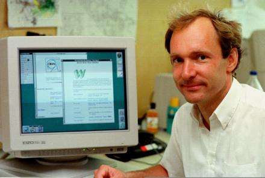

Protocolul HTTP
Alex Morega
Cuprins
-
Scurtă istorie
-
Descriere a protocolului
-
client, server
- structura unui URL
- verbe
- response status
- header
-
Conținutul paginilor web
-
Hands-on: discutăm cu servere
-
Hands-on: implementăm cu servere
De unde a plecat totul
-
1990: Prima implementare

-
1993: Mosaic, browser grafic
-
1994: fondarea W3C
-
1995: Javascript
-
1996: HTTP/1.1
-
1997: HTML4
-
1998: CSS2
Și incotro se indreaptă
-
2000: dot-com bubble
-
2000-2009 XHTML (R.I.P)
-
2007-prezent HTML5, CSS3

Schema protocolului
-
TCP, client, server
-
Request, Response
-
Proxy
-
Documente cu hyperlinkuri
URL (adrese)
scheme://domain:port/path?query?#fragment
-
Schemă
http, https, mailto, ftp
-
Domeniu (DNS)
-
Port (default) 80
-
Path (la fel ca la sistemul de fișiere)
-
Query (perechi cheie-valoare)
-
?culoare=verde
-
?culoare=verde&parte=dreapta&etaj=2
-
?culoare=ro%C8%99u
-
Fragment (nu e trimis la server)
Request
-
Request line
- verbe safe (GET, HEAD)
- idempotente (PUT, DELETE)
- undefined (POST)
-
Headere
-
User-Agent (Mozzilla/5.0[...] Chrome/17.0.963.56)
-
Accept, Accept-Encoding, Accept-Language
-
Connection
-
Host (virtual hosting)
-
Cookie
-
Request body
Request - exemple
GET /story.html
Connection: keep-alive
POST /buy_ticket
coloare=verde&parte=dreapta=etaj=2
Response
-
Status line
- 1xx: speciale
- 2xx: succes
- 3xx: redirect
- 4xx: client error
- 5xx: server error
-
Headere
- Content-Type (text/plain, image/png, text.html; charset=utf-8)
- Content-Length (bytes)
- Vary
- Cache-Control
- Etag
- Set-Cookie
-
Response body
Response - exemplu
HTTP/1.1 404 Not Found
Server: nginx/0.7.67
Date: Fri, 24 Feb 2012 23:52:26 GMT
Content-Type: text/html
Content-Length: 169
Connection: keep-alive
<html>
<head><title>404 Not Found</title></head>
<body bgcolor="white">
<center><h1>404 Not Found</h1></center>
<hr><center>nginx/0.7.67</center>
</body>
</html>
Conținut tipic
-
Documente HTML
-
Styling CSS
-
Interacțiune JavaScript
-
Imagini, media
-
Linkuri intre resurse
Linkuri, formulare
<a href="http://www.rosedu.org">ROSEdu</a>
<img src="thumbs-up.png">
<link rel="stylesheet" href="style.css">
<link href="news.atom" rel="alternate" title="News feed" type="application/atom+xml">
<script src="modernizr.js"></script>
<form method="post" action="register_me">
<!-- fields -->
</form>
<input name="first_name" required>